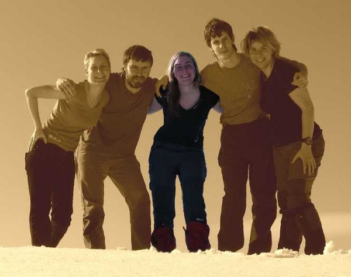

Tým
| Lenka | Vašek | Ondra | Sabča | |
|
Hanka | |
|
Narodila jsem se v 80.letech 20. století a neměnila bych, protože v tomto případě,co nezažiju, dokážu si jen těžko představit..Nacházím se na rozhranní studia, brigád a hledáním stabilního pracovního úvazku. Svoboda pro mě znamená možnost volby. Je to možnost jak přistupovat k situacím, které mě potkávají, možnost se rozhodnout, kterou cestou půjdu dál, kterou výzvu přijmu a kterou nechám být. Znamená to však pro mě i akceptovat a přijmout zodpovědnost za to, co moje rozhodnutí přináší. A obnáší to i přizpůsobení tomu, pro co jsem se rozhodla. Například jít na vysokou školu, studovat, rozhodnout se pro určitou práci, založit rodinu - to vše je svobodné rozhodnutí, ale to pak i znamená podřídit se pravidlům studia, podmínkám pracovního poměru nebo potřebám rodiny. Myslím, že časem, jak jde člověk životem, se vnímání svobody začíná měnit. Období největší osobní svobody mám pravděpodobně právě teď, kdy rozhoduji pouze o svém životě. Až budu mít jednou rodinu, moje vnímání svobody se určitě změní. A těším se na to, protože budu vědět, že tak to chci :o). |  |